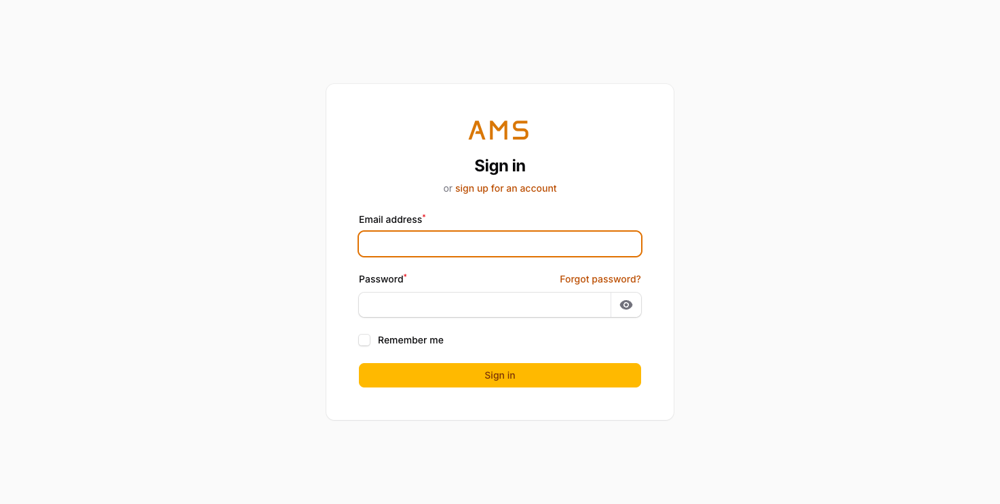
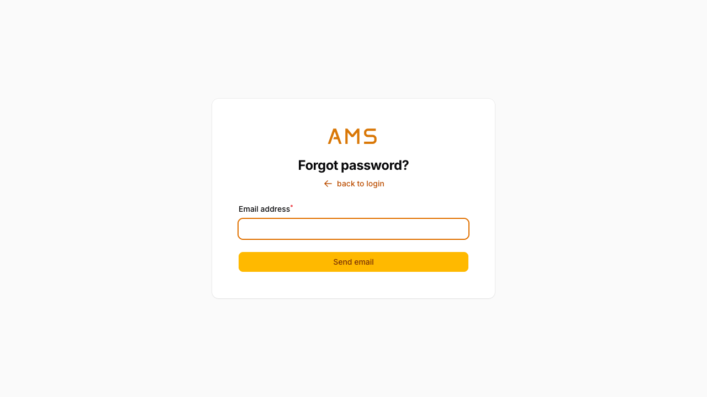
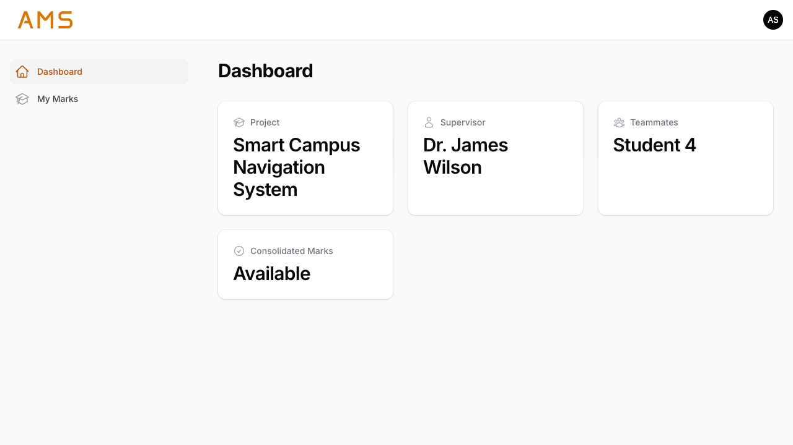
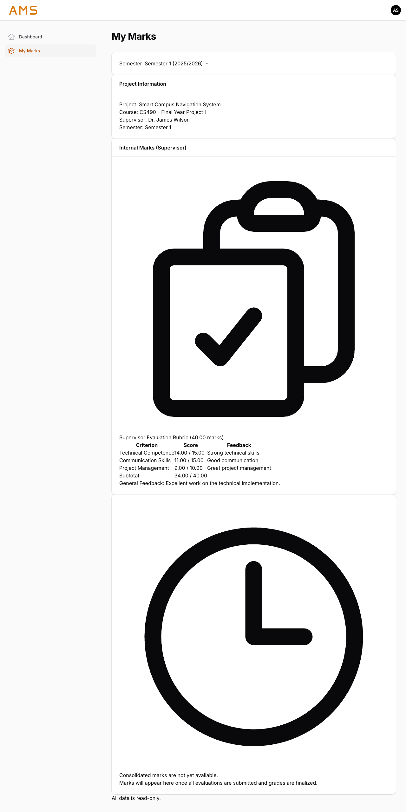
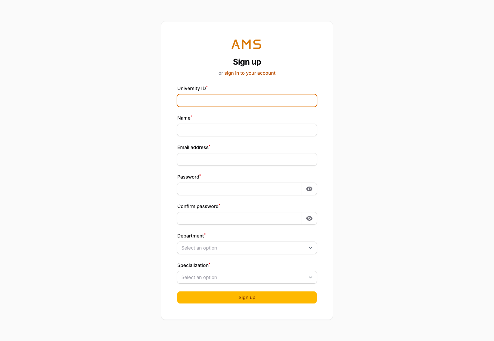

Student Panel — System Documentation
Date: March 2026
System URL: https://ams.test/student
/student/login

Authentication entry point for the student panel. Built on Filament 5 authentication, the login form collects the student's email address and password, accompanied by automatic CSRF token protection on every submission. The interface follows the system-wide amber theme.
The student panel does NOT have Multi-Factor Authentication (MFA) enabled. Upon successful credential verification, the student is redirected directly to the Dashboard without an intermediate OTP step.
New students who do not yet have an account can follow the "sign up for an account" link displayed below the page heading, which navigates to the Registration screen.
| Element | Type | Details |
|---|---|---|
| Email field | Text input | Required. Accepts the student's registered email address. |
| Password field | Password input | Required. Masked input for the student's password. |
| Sign in button | Submit button | Submits credentials for authentication. |
| CSRF token | Hidden field | Automatically injected by Filament/Laravel for request integrity. |
| "sign up for an account" link | Hyperlink | Displayed below the page heading. Navigates to /student/register for new student self-registration. |
| Table | Column | Type | Constraints | Screen Mapping |
|---|---|---|---|---|
users |
varchar(255) | UNIQUE, NOT NULL | Email input field → credential lookup | |
users |
password | varchar(255) | NOT NULL | Password field → bcrypt hash comparison |
sessions |
user_id | bigint (unsigned, nullable) | FK → users.id | Populated after successful login |
sessions |
ip_address | varchar(45) | NULLABLE | Captured from client request on login |
sessions |
user_agent | text | NULLABLE | Browser user-agent string stored on login |
sessions |
last_activity | integer | NOT NULL | Unix timestamp updated on each request |
| ID | Scenario | Steps | Expected Result |
|---|---|---|---|
| STU-AUTH-001 | Valid login | Enter alice@ams.test / Student123 and click Sign in. |
Student is authenticated and redirected to the Dashboard at /student. |
| STU-AUTH-002 | Invalid credentials rejected | Enter a valid email with an incorrect password and submit. | Login fails. An error notification is displayed indicating invalid credentials. User remains on the login page. |
| STU-AUTH-003 | Empty fields show validation | Leave both email and password fields blank and click Sign in. | Validation messages appear beneath each required field. Form is not submitted. |
| STU-AUTH-004 | Redirect to dashboard | After successful authentication, observe the browser URL. | URL changes to /student (the Dashboard) without any intermediate MFA step. |
| STU-AUTH-005 | Only students can access this panel | Attempt to log in using a non-student user's credentials (e.g., admin or staff account). | Authentication is rejected. Only users with the student role can access the /student panel. |
/student/password-reset

Password reset request form for student users. When a student has forgotten their password, they can navigate to this screen and enter their registered email address. The system generates a tokenized reset link and sends it to the provided email address.
The reset token is stored in the password_reset_tokens table and is
time-limited. Upon clicking the link in the email, the student is taken to a form
to set a new password, after which the token is invalidated.
| Element | Type | Details |
|---|---|---|
| Email field | Text input | Required. The student's registered email address. |
| Send reset link button | Submit button | Triggers the password reset email dispatch. |
| Table | Column | Type | Constraints | Screen Mapping |
|---|---|---|---|---|
password_reset_tokens |
varchar(255) | PRIMARY KEY | Email input field → identifies the user requesting reset | |
password_reset_tokens |
token | varchar(255) | NOT NULL | Hashed token embedded in the emailed reset link |
password_reset_tokens |
created_at | timestamp | NULLABLE | Used to determine token expiry (default 60 minutes) |
| ID | Scenario | Steps | Expected Result |
|---|---|---|---|
| STU-AUTH-006 | Valid email sends reset link | Enter a registered student email (e.g., alice@ams.test) and submit. |
A success notification is displayed. A password reset email is sent containing a tokenized link. A row is inserted into password_reset_tokens. |
| STU-AUTH-007 | Non-existent email shows error | Enter an email address not associated with any account and submit. | An error message is shown indicating the email address was not found. |
| STU-AUTH-008 | Token expires correctly | Request a password reset, wait beyond the expiry window (default 60 minutes), then attempt to use the link. | The reset link is rejected. The student is informed the token has expired and must request a new one. |
/student

The main hub for authenticated student users. The Dashboard presents essential information
at a glance through two header widgets, both implemented as Filament
StatsOverviewWidget components.
Displays the student's current project assignment at a glance via three stat cards. The widget retrieves the student's latest project (ordered by creation date) and presents:
Displays a single stat card indicating whether consolidated marks have been finalized for the student:
| Table | Column | Type | Constraints | Screen Mapping |
|---|---|---|---|---|
projects |
title | varchar(255) | NOT NULL | MyProjectWidget → Project Title stat card |
projects |
supervisor_id | bigint (unsigned, nullable) | FK → users.id | MyProjectWidget → Supervisor stat card (via users.name) |
users |
name | varchar(255) | NOT NULL | Supervisor name display, Teammates list |
project_student |
project_id | bigint (unsigned) | FK → projects.id | Links student to project; used to resolve teammates |
project_student |
user_id | bigint (unsigned) | FK → users.id | Identifies each student member of the project |
consolidated_marks |
student_id | bigint (unsigned) | FK → users.id, NOT NULL | MarksAvailableWidget → existence check determines "Available" vs "Not yet finalized" |
| ID | Scenario | Steps | Expected Result |
|---|---|---|---|
| STU-DASH-001 | Dashboard loads | Log in as a student and navigate to /student. |
The Dashboard page renders successfully with both widgets visible. |
| STU-DASH-002 | Project info displayed correctly | Log in as a student assigned to a project. Observe the MyProjectWidget. | The Project Title stat card shows the correct project title from the projects table. |
| STU-DASH-003 | Supervisor name shown | Observe the Supervisor stat card in MyProjectWidget. | The supervisor's full name (from users.name via projects.supervisor_id) is displayed. |
| STU-DASH-004 | Teammates listed (excluding self) | Observe the Teammates stat card in MyProjectWidget. | All other students in the same project are listed, comma-separated. The logged-in student is excluded from the list. |
| STU-DASH-005 | Marks status — Available | Log in as a student who has a consolidated_marks record. Observe MarksAvailableWidget. |
The stat card displays "Available" with a green check-circle icon. |
| STU-DASH-006 | Marks status — Not yet finalized | Log in as a student with no consolidated_marks record. Observe MarksAvailableWidget. |
The stat card displays "Not yet finalized" with an orange clock icon. |
| STU-DASH-007 | Handles student with no project gracefully | Log in as a student not assigned to any project. | MyProjectWidget shows "No project assigned" for the title, "Not assigned" for supervisor, and "None" for teammates. No errors are thrown. |
/student/my-marks

Comprehensive marks view for the authenticated student. This page provides a complete breakdown of the student's academic evaluation for each semester in which they have been assigned a project. It combines internal evaluation scores with the final consolidated mark, letter grade, and GPA equivalent.
A dropdown at the top of the page lists all semesters where the student has projects, sorted newest first. The page defaults to the latest semester on first load. Selecting a different semester dynamically updates all displayed data.
For the selected semester, the following project details are displayed:
| Field | Source | Details |
|---|---|---|
| Project Title | projects.title |
The name of the assigned project. |
| Course | courses.code + courses.title |
The course under which the project falls (e.g., "CS490 — Senior Project"). |
| Supervisor | users.name via projects.supervisor_id |
The supervisor's full name. |
| Group Members | project_student + users.name |
All students assigned to the project. |
Displays all submitted supervisor evaluations for the project
(evaluations.evaluator_role = 'Supervisor' and evaluations.status = 'submitted').
Each evaluation shows:
rubric_template.evaluation_scores.student_id = [this student]) — criteria marked as is_individual = true.evaluation_scores.student_id = NULL) — criteria marked as is_individual = false, applied uniformly to all group members.The final academic result for the student, comprising:
| Field | Source | Details |
|---|---|---|
| Calculated Total | consolidated_marks.total_calculated_score |
The system-computed total from all evaluation components. |
| Override Score | consolidated_marks.override_score |
An optional manually set score that takes precedence (if any). |
| Final Score | Derived: override_score ?? total_calculated_score |
Displayed to 2 decimal places. Uses override if set, otherwise calculated total. |
| Letter Grade | grading_scales lookup |
Determined by matching the final score against min_score–max_score ranges. |
| GPA Equivalent | grading_scales.gpa_equivalent |
Numeric GPA value corresponding to the letter grade. |
| Table | Column | Type | Constraints | Screen Mapping |
|---|---|---|---|---|
projects |
title | varchar(255) | NOT NULL | Project Title display |
projects |
course_id | bigint (unsigned, nullable) | FK → courses.id | Links project to its course for Course display |
projects |
supervisor_id | bigint (unsigned, nullable) | FK → users.id | Resolves Supervisor name via users table |
projects |
semester_id | bigint (unsigned, nullable) | FK → semesters.id | Semester selector → filters projects by semester |
project_student |
project_id | bigint (unsigned) | FK → projects.id | Links students to projects for Group Members display |
project_student |
user_id | bigint (unsigned) | FK → users.id | Identifies each group member |
evaluations |
project_id | bigint (unsigned) | FK → projects.id, NOT NULL | Links evaluation to the project |
evaluations |
evaluator_role | varchar(255) | NOT NULL | Filtered to 'Supervisor' for internal marks display |
evaluations |
status | varchar(255) | NOT NULL | Only 'submitted' evaluations are shown |
evaluations |
rubric_template_id | bigint (unsigned, nullable) | FK → rubric_templates.id | Links evaluation to rubric for rubric name and criteria |
evaluation_scores |
evaluation_id | bigint (unsigned) | FK → evaluations.id, NOT NULL | Links score to its parent evaluation |
evaluation_scores |
criterion_id | bigint (unsigned) | FK → criteria.id, NOT NULL | Identifies which criterion the score belongs to |
evaluation_scores |
student_id | bigint (unsigned, nullable) | FK → users.id | NULL = group score (all members); specific ID = individual student score |
evaluation_scores |
score_awarded | decimal(8,2) | NOT NULL | The numeric score displayed per criterion |
evaluation_scores |
score_level_id | bigint (unsigned, nullable) | FK → score_levels.id | References the rubric level selected for this score |
evaluation_scores |
feedback | text | NULLABLE | Optional evaluator comments per criterion |
criteria |
rubric_template_id | bigint (unsigned) | FK → rubric_templates.id, NOT NULL | Groups criteria under a rubric template |
criteria |
title | varchar(255) | NOT NULL | Criterion name shown in the score breakdown |
criteria |
max_score | decimal(8,2) | NOT NULL | Denominator in "X / max_score" display |
criteria |
is_individual | boolean | DEFAULT false | Determines whether scores are per-student or shared across the group |
consolidated_marks |
project_id | bigint (unsigned) | FK → projects.id, NOT NULL | Links consolidated mark to project |
consolidated_marks |
student_id | bigint (unsigned) | FK → users.id, NOT NULL | Identifies the student this mark belongs to |
consolidated_marks |
total_calculated_score | decimal(8,2) | NOT NULL | Calculated Score display |
consolidated_marks |
override_score | decimal(8,2) | NULLABLE | Override Score display (shown only if set) |
consolidated_marks |
override_reason | text | NULLABLE | Reason for score override, if applicable |
consolidated_mark_components |
consolidated_mark_id | bigint (unsigned) | FK → consolidated_marks.id, NOT NULL | Links component to parent consolidated mark |
consolidated_mark_components |
source_label | varchar(255) | NOT NULL | Label identifying the score source (e.g., "Supervisor Evaluation") |
consolidated_mark_components |
score | decimal(8,2) | NOT NULL | Component score contributing to the total |
grading_scales |
min_score | decimal(8,2) | NOT NULL | Lower bound for letter grade lookup |
grading_scales |
max_score | decimal(8,2) | NOT NULL | Upper bound for letter grade lookup |
grading_scales |
letter_grade | varchar(10) | NOT NULL | Letter Grade display (e.g., A+, A, B+) |
grading_scales |
gpa_equivalent | decimal(3,2) | NOT NULL | GPA Equivalent display (e.g., 4.00, 3.67) |
semesters |
id | bigint (unsigned) | PRIMARY KEY, AUTO_INCREMENT | Semester selector dropdown value |
semesters |
name | varchar(255) | NOT NULL | Semester selector dropdown label (e.g., "Fall") |
semesters |
academic_year | varchar(255) | NOT NULL | Academic year shown alongside semester name (e.g., "2025-2026") |
courses |
code | varchar(255) | NOT NULL | Course code in project information section |
courses |
title | varchar(255) | NOT NULL | Course title in project information section |
users |
name | varchar(255) | NOT NULL | Supervisor name and student names in group list |
users |
university_id | varchar(255) | NULLABLE | Student university ID shown alongside name in group members |
| ID | Scenario | Steps | Expected Result |
|---|---|---|---|
| STU-MRK-001 | Page loads | Navigate to /student/my-marks as an authenticated student. |
The page renders without error. The semester selector, project info, and marks sections are visible. |
| STU-MRK-002 | Semester selector works | Click the semester dropdown. Select a different semester from the list. | The dropdown lists all semesters where the student has projects, sorted newest first. Selecting a different semester refreshes all data on the page. |
| STU-MRK-003 | Project info correct | Observe the project information section for the selected semester. | Project title, course (code + title), supervisor name, and all group members are displayed accurately matching database records. |
| STU-MRK-004 | Internal marks display scores | Observe the internal marks section listing supervisor evaluations. | All submitted supervisor evaluations are shown with rubric name and per-criterion score breakdowns (score awarded / max score). |
| STU-MRK-005 | Individual vs group criteria handled | Verify a rubric containing both individual (is_individual = true) and group (is_individual = false) criteria. |
Individual criteria show the score specific to the logged-in student (student_id = auth user). Group criteria show the shared score (student_id = NULL). |
| STU-MRK-006 | Consolidated mark shown with final score | Observe the consolidated mark section. | Calculated total, override score (if any), and final score (to 2 decimal places) are displayed correctly. Final score = override_score if set, otherwise total_calculated_score. |
| STU-MRK-007 | Letter grade lookup works | Cross-reference the displayed letter grade against the grading_scales table for the given final score. |
The letter grade matches the grading_scales row where min_score <= final_score <= max_score. |
| STU-MRK-008 | GPA displayed | Observe the GPA equivalent next to the letter grade. | The GPA value matches grading_scales.gpa_equivalent for the corresponding letter grade row. |
| STU-MRK-009 | Student with no marks sees appropriate message | Log in as a student who has no evaluations or consolidated marks for the selected semester. | An informational message is displayed (e.g., "No marks available yet") instead of empty tables or errors. |
| STU-MRK-010 | Semester switching updates data | Switch between two semesters that have different projects and marks. | All displayed data (project info, internal marks, consolidated mark, letter grade, GPA) updates to reflect the newly selected semester's records. |
/student/register

Self-registration form for new students. Accessible from the Login screen via the "sign up for an account" link. Students fill in their academic and personal details to create an account. On successful submission the system:
users record with the supplied details.The email address must belong to an allowed university domain. The list of permitted domains is maintained by admins under Master Data → Allowed Email Domains. If the domain is not whitelisted, registration is rejected with a message listing the accepted domains.
The Department selector is a UI-only convenience field used to filter the Specialization dropdown; it is not persisted to the database.
| Element | Type | Details |
|---|---|---|
| University ID | Text input | Required. Must be unique across all users. Maps to users.university_id. |
| Name | Text input | Required. Full display name. Maps to users.name. |
| Email address | Email input | Required. Must be unique and belong to an active domain in allowed_email_domains. Maps to users.email. |
| Password | Password input | Required. Standard Laravel password rules. Stored as bcrypt hash. |
| Confirm password | Password input | Required. Must match the Password field. |
| Department | Select (reactive) | Required at UI level. Filters the Specialization options. Not saved to the database. |
| Specialization | Select (dependent) | Required. Options filtered by the chosen Department. Maps to users.specialization_id. |
| Sign up button | Submit button | Submits the registration form. Triggers user creation and sends the verification email. |
| "sign in to your account" link | Hyperlink | Returns the user to the Login screen at /student/login. |
| Table | Column | Type | Constraints | Screen Mapping |
|---|---|---|---|---|
users |
university_id | varchar(255) | UNIQUE, NULLABLE | University ID field |
users |
name | varchar(255) | NOT NULL | Name field |
users |
varchar(255) | UNIQUE, NOT NULL | Email field; validated against allowed_email_domains |
|
users |
password | varchar(255) | NOT NULL | Password field (stored as bcrypt hash) |
users |
specialization_id | bigint (unsigned) | NULLABLE, FK → specializations.id | Specialization select field |
users |
email_verified_at | timestamp | NULLABLE | Null until student clicks the verification link in their email |
allowed_email_domains |
domain | varchar(255) | UNIQUE, NOT NULL | Email domain validated against active records here |
allowed_email_domains |
is_active | boolean | DEFAULT true | Only true domains are accepted during registration |
model_has_roles |
role_id, model_id | bigint | FK → roles / users | Student role automatically assigned after successful registration |
specializations |
id, name, department_id | — | — | Populates the Specialization select; filtered by Department |
departments |
id, name | — | — | Populates the Department select (UI-only) |
| ID | Title | Steps | Expected Result |
|---|---|---|---|
| STU-REG-001 | Successful registration with valid domain | Navigate to /student/register. Fill all fields with valid data using an email from an active allowed domain. Click Sign up. |
User record created in users. Student role assigned. Verification email sent. User sees confirmation or is redirected to the student panel. |
| STU-REG-002 | Rejected registration with disallowed email domain | Fill the form with an email whose domain is NOT in allowed_email_domains. Click Sign up. |
Validation error displayed: "Email must be from an allowed university domain" with the list of allowed domains. No user record created. |
| STU-REG-003 | Duplicate email rejected | Attempt to register with an email that already exists in the users table. |
Validation error: email is already taken. Registration blocked. |
| STU-REG-004 | Duplicate University ID rejected | Attempt to register with a university_id that already exists. | Validation error: university ID is already taken. Registration blocked. |
| STU-REG-005 | Password confirmation mismatch | Enter differing values in Password and Confirm password fields. Click Sign up. | Validation error on the confirm password field. Registration blocked. |
| STU-REG-006 | Required fields enforced | Submit the form with one or more required fields left blank. | Inline validation errors highlight each missing field. Registration blocked. |
| STU-REG-007 | Department filters Specialization options | Select a Department from the dropdown. Observe the Specialization dropdown. | Only specializations belonging to the selected department are listed. Selecting a different department updates the specialization options reactively. |
| STU-REG-008 | Department not persisted | Complete registration successfully. Query the created users record. |
The users table has no department_id column. Specialization_id is saved; department was UI-only. |
| STU-REG-009 | Student role automatically assigned | Complete a successful registration. Check model_has_roles for the new user. |
A row exists in model_has_roles linking the user to the Student role. |
| STU-REG-010 | Registration unavailable when all domains disabled | As admin, set all allowed_email_domains.is_active to false. Attempt any email domain in the registration form. |
Every domain is rejected with the validation error. No registration possible until an active domain is re-enabled. |
/student/email-verification/prompt
After a student successfully completes registration, Filament's built-in email verification system sends a signed URL to the student's registered email address. The student must click this link to verify their email before their account is considered fully active.
The verification is powered by Laravel's MustVerifyEmail contract implemented
on the User model, combined with Filament's ->emailVerification()
panel option in StudentPanelProvider.
The verification prompt page (/student/email-verification/prompt) is the
standard Filament verification notice, offering a Resend verification email
button if the original email was not received.
| Element | Type | Details |
|---|---|---|
| Verification notice | Info message | Informs the student that a verification email has been sent and they must click the link. |
| Resend verification email | Button | Triggers a new verification email to the registered address. Rate-limited by Filament. |
| Table | Column | Type | Constraints | Screen Mapping |
|---|---|---|---|---|
users |
email_verified_at | timestamp | NULLABLE | Set to current timestamp when the student clicks the signed verification link. NULL until verified. |
users |
varchar(255) | UNIQUE, NOT NULL | Destination address for the verification email. |
| ID | Title | Steps | Expected Result |
|---|---|---|---|
| STU-VRF-001 | Verification email sent after registration | Complete a successful registration with a reachable email address. | A signed verification email is received. The link in the email is unique and time-limited. |
| STU-VRF-002 | Email verified on link click | Click the verification link from the email. | users.email_verified_at is set to the current timestamp. Student is redirected to the student dashboard. |
| STU-VRF-003 | Resend verification email | Navigate to /student/email-verification/prompt. Click "Resend verification email". |
A new verification email is dispatched to the registered address. A success notification is shown. |
| STU-VRF-004 | Expired verification link rejected | Wait for the signed URL to expire (per auth.verification.expire config), then click the old link. |
Laravel rejects the expired signature. The student is prompted to request a new link. |
Academic Management System (AMS) — Student Panel Documentation
Generated: March 2026 | Confidential — For Internal Use Only